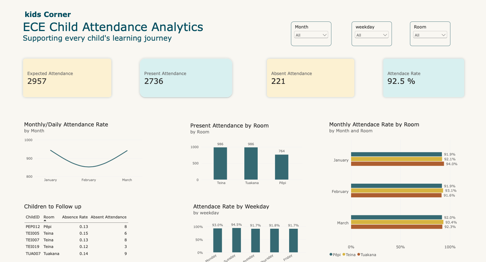
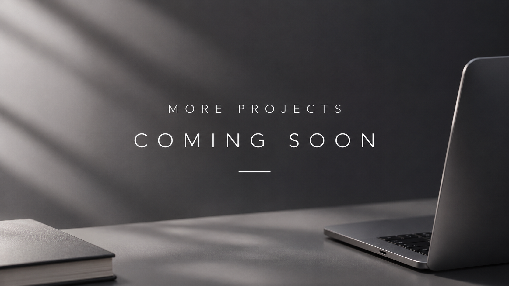

Nov, 2026
Developed an interactive Power BI dashboard to analyse attendance and absence patterns across months, weekdays, and rooms using fictional ECE attendance data. Used Excel, Power Query, DAX, and Power BI to transform data, calculate attendance metrics, and identify key trends.
Created a supporting Data Analysis Report and PowerPoint presentation to communicate key findings, interpret patterns, discuss data limitations, and recommend further investigation.


Developed a full-stack website for a used-car dealership using the MERN stack （MongoDB · Express.js · React · Node.js）. The project focused on improving the user experience through clear navigation, vehicle search functionality, and streamlined vehicle listings. It also included administrative features to support inventory management and customer enquiries.
Created UX/UI design projects as part of the Google UX Design Certificate, exploring user needs and translating them into practical interface designs. The work demonstrates my interest in user-centred design, usability, and creating accessible digital experiences.

Currently expanding my skills in data engineering, including data pipelines, ETL/ELT, cloud technologies, and modern data platforms.